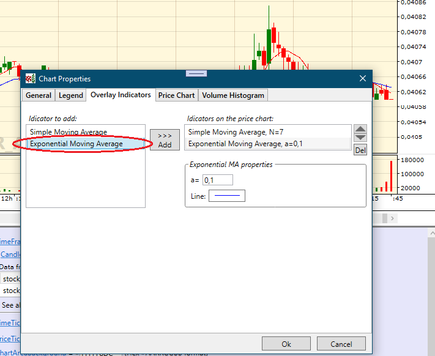

Creating your own overlay technical indicator
The CandleChart control contains a small set of built-in technical indicators to demonstrate such a functionality. Expextedly, you will want to expand the CandleChart control with your own add-in overlay indicators. You have such possibility and in this article we'll walk through a creation of your own overlay indicator.
Let's create an add-in Exponential Moving Average indicator, which is not included in the CandleChart control assembly.
An add-in overlay indicator class must be derived from the base OverlayIndicator class. Add your new indicator class to a Startup project of your solution:
using System.Collections.Generic; using System.Windows.Media; using System.Windows; using Newtonsoft.Json; using FancyCandles; using FancyCandles.Indicators; [JsonObject(MemberSerialization.OptIn)] public sealed class ExponentialMovingAverage : OverlayIndicator { }CandleChart uses the Json.NET framework for serialization. So make sure to install Newtonsoft.Json Nuget package to your project.
[JsonObject]is an attribute necessary for the CandleChart control's serialization system.Implement two abstract base class properties providing an indicator instance name:
public override string ShortName { get { return "Exponential MA"; } } public override string FullName { get { return $"Exponential Moving Average, a={Smoothing}"; } }, and one static property for the same purpose:
public static string StaticName { get { return "Exponential Moving Average"; } }The names of the properties is self-explanatory. These properties will be used in UI. Try not to create too long name values.
It's not mandatory, but for perfomance we will store precalculated indicator values for all periods of time. For this purpose we'll create a List field:
private List<double> indicatorValues;To provide a possibility for indicator users to get an indicator value at a specified time period we must implement the abstract OverlayIndicator.GetIndicatorValue() method, which will just get a value from the
indicatorValueslist:public override double GetIndicatorValue(int candle_i) { if (indicatorValues == null) return 0; return indicatorValues[candle_i]; }indicatorValueswill always has the same Length as the OverlayIndicator.CandlesSource collection. Changing the last element of OverlayIndicator.CandlesSource will cause recalculation of the last element ofindicatorValues. And the same about adding a new element. For realizing such a behaviour the OverlayIndicator class has some abstract methods that we must implement in ourExponentialMovingAverageclass:protected override void ReCalcAllIndicatorValues() { indicatorValues = new List<double>(); if (CandlesSource == null) return; indicatorValues.Add(CandlesSource[0].C); for (int candle_i = 1; candle_i < CandlesSource.Count; candle_i++) indicatorValues.Add(CalcIndicatorValue(candle_i)); } protected override void OnLastCandleChanged() { if (CandlesSource.Count < 2) return; indicatorValues[indicatorValues.Count - 1] = CalcIndicatorValue(CandlesSource.Count - 1); } protected override void OnNewCandleAdded() { if (CandlesSource.Count < 2) return; indicatorValues.Add(CalcIndicatorValue(CandlesSource.Count - 1)); }All of aforementioned methods calls the CalcIndicatorValue() method, which contains the formula for calculating the Exponential Moving Average indicator:
private double CalcIndicatorValue(int candle_i) { double ema = CandlesSource[candle_i].C * Smoothing + GetIndicatorValue(candle_i - 1) * (1 - Smoothing); return ema; }Besides that, we have to add a class property for every mathematical parameter of a technical indicator. In our case it will be the only
Smoothingparameter, which you can see in the above formula:[JsonProperty] public double Smoothing { get { return smoothing; } set { if (smoothing == value) return; smoothing = value; ReCalcAllIndicatorValues(); OnPropertyChanged(); OnPropertyChanged("FullName"); } }Make sure each of these properties has the
[JsonProperty]attribute. It is necessary for the CandleChart serialization system.Add the
Penproperty so class users could specify a Pen to draw the indicator chart:private Pen pen = new Pen(Brushes.Black, 1); //default value is Black solid Pen with Thickness = 1 [JsonProperty] public Pen Pen { get { return pen; } set { pen = (Pen)value.GetCurrentValueAsFrozen(); OnPropertyChanged(); } }Make sure it has the
[JsonProperty]attribute.Implement the abstract OnRender() method of the base OverlayIndicator class:
public override void OnRender(DrawingContext drawingContext, IntRange visibleCandlesRange, CandleExtremums visibleCandlesExtremums, double candleWidth, double gapBetweenCandles, double RenderHeight) { if (visibleCandlesRange.Count < 0 || visibleCandlesRange.Start_i < 0) return; double candleWidthPlusGap = candleWidth + gapBetweenCandles; double range = visibleCandlesExtremums.PriceHigh - visibleCandlesExtremums.PriceLow; double prevCndlCenterX = 0; double prevLocalIndicatorValue = 0; prevCndlCenterX = 0.5 * candleWidth; double prevIndicatorValue = GetIndicatorValue(visibleCandlesRange.Start_i); prevLocalIndicatorValue = (1.0 - (prevIndicatorValue - visibleCandlesExtremums.PriceLow) / range) * RenderHeight; for (int cndl_i = 1; cndl_i < visibleCandlesRange.Count; cndl_i++) { double indicatorValue = GetIndicatorValue(visibleCandlesRange.Start_i + cndl_i); double localIndicatorValue = (1.0 - (indicatorValue - visibleCandlesExtremums.PriceLow) / range) * RenderHeight; double cndlCenterX = cndl_i * candleWidthPlusGap + 0.5 * candleWidth; drawingContext.DrawLine(Pen, new Point(prevCndlCenterX, prevLocalIndicatorValue), new Point(cndlCenterX, localIndicatorValue)); prevCndlCenterX = cndlCenterX; prevLocalIndicatorValue = localIndicatorValue; } }It draws a visible part of the indicator chart and will be called from the UIElement.OnRender(DrawingContext) method that is responsible for drawing the price chart. It will be called with the same
DrawingContext. OnRender() gets as parameters additional information about a drawing area and a visible part of the price chart.And the last abstract property of the base OverlayIndicator class you need to implement is PropertiesEditorXAML:
public override string PropertiesEditorXAML { get { string xaml = $@" <StackPanel> <StackPanel.Resources> <fp:SymStringToNumberConverter x:Key=""symStringToNumberConverter""/> <Style x:Key=""horizontalCaption_"" TargetType=""TextBlock""> <Setter Property=""Margin"" Value=""0 0 5 2""/> <Setter Property=""VerticalAlignment"" Value=""Bottom""/> </Style> <Style x:Key=""settingsItem_"" TargetType=""StackPanel""> <Setter Property=""Orientation"" Value=""Horizontal""/> <Setter Property=""FrameworkElement.HorizontalAlignment"" Value=""Left""/> <Setter Property=""FrameworkElement.Margin"" Value=""0 8 0 0""/> </Style> </StackPanel.Resources> <StackPanel Style=""{{StaticResource settingsItem_}}""> <TextBlock Style=""{{StaticResource horizontalCaption_}}"" ToolTip=""Smoothing parameter (between 0 and 1 inclusive)."">a=</TextBlock> <fp:DoubleTextBox MinValue=""0"" MaxValue=""1"" VerticalAlignment=""Bottom"" Width=""50"" Text=""{{Binding Smoothing, Converter={{StaticResource symStringToNumberConverter}}, Mode=TwoWay, UpdateSourceTrigger=PropertyChanged}}""/> </StackPanel> <StackPanel Style=""{{StaticResource settingsItem_}}""> <TextBlock Style=""{{StaticResource horizontalCaption_}}"">Line:</TextBlock> <fp:PenSelector SelectedPen=""{{Binding Pen, Mode = TwoWay}}"" VerticalAlignment=""Bottom""/> </StackPanel> </StackPanel>"; return xaml; } }It provides a XAML snippet to load dynamically in a CandleChart properties window. It represents an editor to tune up the indicator instance. The FrameworkElement instance created from this XAML will has a DataContext set to this indicator class instance (value inherited from its container).
Using the add-in Overlay indicator in conjunction with the CandleChart control
Once you have added a class derived from OverlayIndicator to a Startup Project of your solution you can use it in conjunction with the CandleChart control. Your indicator will be atomatically found by CandleChart instances of your application. But it is not the only way to add new indicators to your application.
You or users of your application can add a new add-in indicator by creating it in a separate solution. You have to do the following:
- Add a new indicator class, like shown above in this article, in a new project inside a new solution and build an assembly.
- Locate the assembly file containing the new indicator class in some folder, usually below your main application root directory.
- Specify the aforementioned folder path in the AddInIndicatorsFolder property of the CandleChart element that will be using your new indicator. The path can be full or relative to the BaseDirectory of your application. For example, it could look like this:
<fc:CandleChart AddInIndicatorsAssemblyPath="AddInIndicators" .../>
In the example above, folder "AddInIndicators" must be located inside the base folder of your application. There can be multiple assembly files in this folder. All of them will be found by the CandleChart element.
To observe the result do the folowing:
- Right click on the price chart area of the CandleChart control.
- Select the "Settings" menu item.
- In the Properties window select the "Overlay Indicators" tab.
If you have done everything right you will see your indicator in the CandleChart available indicator list:

Full source code of the ExponentialMovingAverage class:
using System.Collections.Generic;
using System.Windows.Media;
using System.Windows;
using Newtonsoft.Json;
using FancyCandles;
using FancyCandles.Indicators;
namespace FancyCandleChartDemo
{
[JsonObject(MemberSerialization.OptIn)]
public sealed class ExponentialMovingAverage : OverlayIndicator
{
private List<double> indicatorValues;
public static string StaticName { get { return "Exponential Moving Average"; } }
public override string ShortName { get { return "Exponential MA"; } }
public override string FullName { get { return $"Exponential Moving Average, a={Smoothing}"; } }
//---------------------------------------------------------------------------------------------------------------------------------------
private double smoothing = 0.25;
[JsonProperty]
public double Smoothing
{
get { return smoothing; }
set
{
if (smoothing == value) return;
smoothing = value;
ReCalcAllIndicatorValues();
OnPropertyChanged();
OnPropertyChanged("FullName");
}
}
//---------------------------------------------------------------------------------------------------------------------------------------
private Pen pen = new Pen(Brushes.Black, 1);
[JsonProperty]
public Pen Pen
{
get { return pen; }
set
{
pen = (Pen)value.GetCurrentValueAsFrozen();
OnPropertyChanged();
}
}
//---------------------------------------------------------------------------------------------------------------------------------------
public override double GetIndicatorValue(int candle_i)
{
if (indicatorValues == null) return 0;
return indicatorValues[candle_i];
}
//---------------------------------------------------------------------------------------------------------------------------------------
private double CalcIndicatorValue(int candle_i)
{
double ema = CandlesSource[candle_i].C * Smoothing + GetIndicatorValue(candle_i - 1) * (1 - Smoothing);
return ema;
}
//---------------------------------------------------------------------------------------------------------------------------------------
protected override void ReCalcAllIndicatorValues()
{
indicatorValues = new List<double>();
if (CandlesSource == null) return;
indicatorValues.Add(CandlesSource[0].C);
for (int candle_i = 1; candle_i < CandlesSource.Count; candle_i++)
indicatorValues.Add(CalcIndicatorValue(candle_i));
}
//---------------------------------------------------------------------------------------------------------------------------------------
protected override void OnLastCandleChanged()
{
if (CandlesSource.Count < 2) return;
indicatorValues[indicatorValues.Count - 1] = CalcIndicatorValue(CandlesSource.Count - 1);
}
//---------------------------------------------------------------------------------------------------------------------------------------
protected override void OnNewCandleAdded()
{
if (CandlesSource.Count < 2) return;
indicatorValues.Add(CalcIndicatorValue(CandlesSource.Count - 1));
}
//---------------------------------------------------------------------------------------------------------------------------------------
public override void OnRender(DrawingContext drawingContext, IntRange visibleCandlesRange, CandleExtremums visibleCandlesExtremums,
double candleWidth, double gapBetweenCandles, double RenderHeight)
{
if (visibleCandlesRange.Count < 0 || visibleCandlesRange.Start_i < 0) return;
double candleWidthPlusGap = candleWidth + gapBetweenCandles;
double range = visibleCandlesExtremums.PriceHigh - visibleCandlesExtremums.PriceLow;
double prevCndlCenterX = 0;
double prevLocalIndicatorValue = 0;
prevCndlCenterX = 0.5 * candleWidth;
double prevIndicatorValue = GetIndicatorValue(visibleCandlesRange.Start_i);
prevLocalIndicatorValue = (1.0 - (prevIndicatorValue - visibleCandlesExtremums.PriceLow) / range) * RenderHeight;
for (int cndl_i = 1; cndl_i < visibleCandlesRange.Count; cndl_i++)
{
double indicatorValue = GetIndicatorValue(visibleCandlesRange.Start_i + cndl_i);
double localIndicatorValue = (1.0 - (indicatorValue - visibleCandlesExtremums.PriceLow) / range) * RenderHeight;
double cndlCenterX = cndl_i * candleWidthPlusGap + 0.5 * candleWidth;
drawingContext.DrawLine(Pen, new Point(prevCndlCenterX, prevLocalIndicatorValue), new Point(cndlCenterX, localIndicatorValue));
prevCndlCenterX = cndlCenterX;
prevLocalIndicatorValue = localIndicatorValue;
}
}
//---------------------------------------------------------------------------------------------------------------------------------------
public override string PropertiesEditorXAML
{
get
{
string xaml = $@"
<StackPanel>
<StackPanel.Resources>
<fp:SymStringToNumberConverter x:Key=""symStringToNumberConverter""/>
<Style x:Key=""horizontalCaption_"" TargetType=""TextBlock"">
<Setter Property=""Margin"" Value=""0 0 5 2""/>
<Setter Property=""VerticalAlignment"" Value=""Bottom""/>
</Style>
<Style x:Key=""settingsItem_"" TargetType=""StackPanel"">
<Setter Property=""Orientation"" Value=""Horizontal""/>
<Setter Property=""FrameworkElement.HorizontalAlignment"" Value=""Left""/>
<Setter Property=""FrameworkElement.Margin"" Value=""0 8 0 0""/>
</Style>
</StackPanel.Resources>
<StackPanel Style=""{{StaticResource settingsItem_}}"">
<TextBlock Style=""{{StaticResource horizontalCaption_}}"" ToolTip=""Smoothing parameter (between 0 and 1 inclusive)."">a=</TextBlock>
<fp:DoubleTextBox MinValue=""0"" MaxValue=""1"" VerticalAlignment=""Bottom"" Width=""50""
Text=""{{Binding Smoothing, Converter={{StaticResource symStringToNumberConverter}}, Mode=TwoWay, UpdateSourceTrigger=PropertyChanged}}""/>
</StackPanel>
<StackPanel Style=""{{StaticResource settingsItem_}}"">
<TextBlock Style=""{{StaticResource horizontalCaption_}}"">Line:</TextBlock>
<fp:PenSelector SelectedPen=""{{Binding Pen, Mode = TwoWay}}"" VerticalAlignment=""Bottom""/>
</StackPanel>
</StackPanel>";
return xaml;
}
}
//---------------------------------------------------------------------------------------------------------------------------------------
}
}